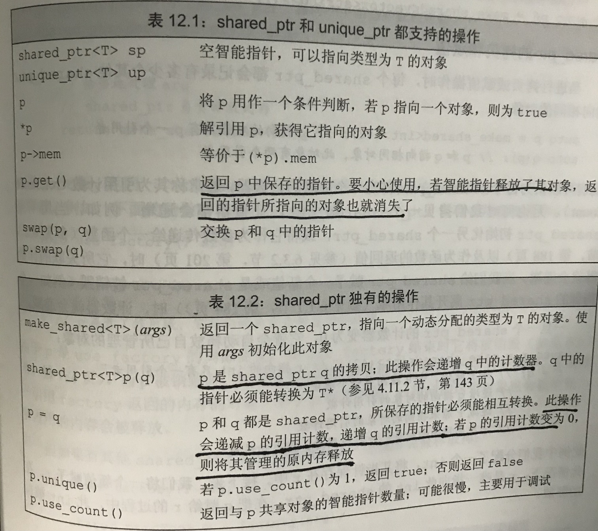
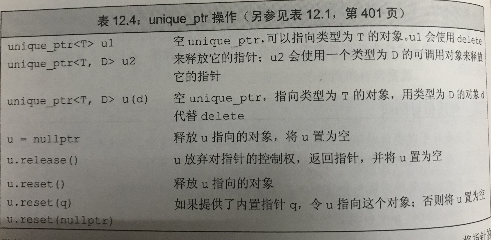
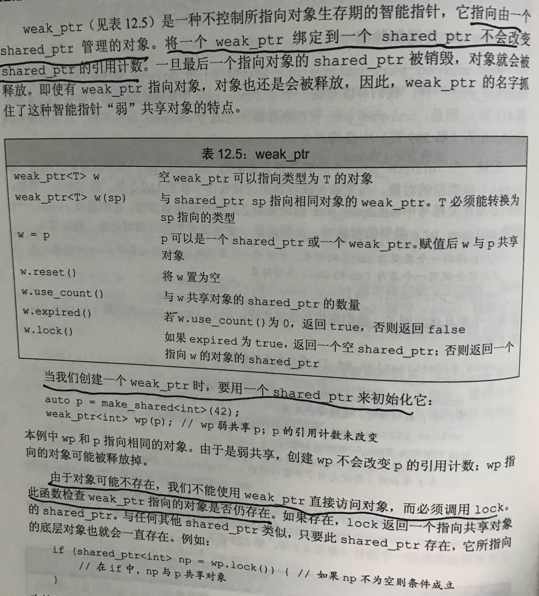
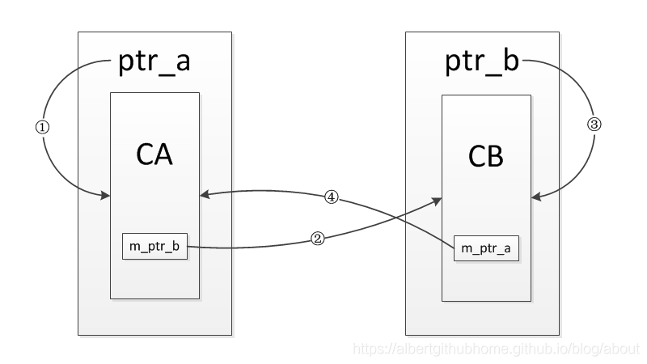
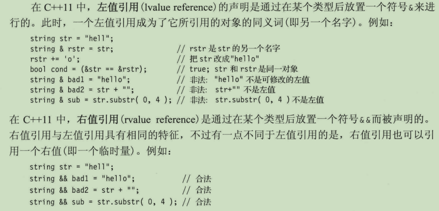

指针 and 引用
指针
-
类型: 内置指针：由new操作返回的指针，绑定的是动态分配对象；普通指针：类似 int *p =1; 智能指针;
隐式销毁一个内置指针类型的成员不会delete它所指向的对象；当指向一个对象的引用或者指针离开作用域时，析构函数不会执行。（是为了避免存在多个指针指向同一块内存时，误回收）但是指针变量本身所占的内存会被回收。 -
指针本身属于对象，其允许对指针赋值和拷贝，在定义时无须赋初值；而在块作用域内定义的指针如果没有被初始化，将是一个不确定的值。
空指针：int *p = nullptr; int *p =0; int *p =NULL; 不允许将int变量赋值给指针，即使其值是0，即
int a =0; int * p = a; //错误空指针指向的地址是特殊的，该地址不允许存放数据和不允许程序访问，所以空指针不能操作该地址里的东西， 可以理解为“指针指向了空，无法操作了”-
指针有两个属性:指向变量/对象的地址和长度，但是指针只存储地址,长度则取决于指针的类型； 编译器根据指针的类型从指针指向的地址向后寻址，指针类型不同则寻址范围也不同, 比如:int*从指定地址向后寻找4字节作为变量的存储单元; double*从指定地址向后寻找8字节作为变量的存储单元。 而void* 指针则没有类型，其可以存放任意类型对象的地址，但我们不能直接操作void* 指针所指向的对象。 void指针不能参与指针运算,除非进行转换，(type*) vp++;
-
const指针： int * const a; 记住*放在const之前用以说明指针是一个常量，不变的是指针本身而非指向的对象的值
- constexpr指针： constexpr int * p = nullptr; p是一个指向整数的常量指针，因为constexpr把它所定义的对象置为了顶层const。
- 解引用：对指针解引用会得到所指的对象，是一个左值；而迭代器的解引用是重载了*运算符，其返回所指元素的引用。
- 指针的类型必须和其所指向对象的类型一致，有两种情况例外:
第一种，指向常量的指针没有规定其所指向的对象必须是一个常量，仅仅要求不能通过该指针改变对象的值。
第二种，指针类型指向基类，但其所指向实际对象是派生类类型。 -
int *p: p是指向int型变量的指针变量 int* *p： p是指向int*型变量的指针变量，即指向指针的指针。
-
T *p; // p+1 实际为p+sizeof(T)*1;
智能指针：自动释放所指向的对象，其是一种模板，在创建智能指针时，需要提供指针可以指向的类型，有三种类型，都定义在memory头文件中。
- shared_ptr
允许多个指针指向同一个对象;
当用一个shared_ptr初始化另一个shared_ptr或者将它作为参数传递给一个函数以及作为函数的返回值，它所关联的计数器（引用计数）就会递增；若是给其赋予新值，或是shared_ptr被销毁， 它就会自动释放自己所管理的对象。
 用来初始化智能指针的普通指针必须指向动态内存(通过new分配的内存)，因为智能指针默认使用delete 来释放所关联的对象。如果将智能指针绑定到一个指向其他类型的资源的指针上，必须提供自己的操作来替代delete.
接受指针参数的智能指针构造函数是explicit, 意味着必须用直接初始化形式来初始化一个智能指针：
shared_ptr < int > p1(new int(1));
shared_ptr < int > p2 = new int(1); //错误
-
unique_ptr
独占所指向的对象, 某一时刻只能有一个unique_ptr指向一个给定的对象，故其不支持拷贝和赋值操作;
通过调用release或者reset可以将指针的所有权从一个非const unique_ptr传给另一个unique_ptr:
unique_ptrp(p1.release()); p2.reset(p3.release());
不能拷贝unique_ptr的规则有一个例外：即可以拷贝和赋值一个将要被销毁的unique_ptr, 例如从函数返回一个unique_ptr。
 -
weak_ptr
属于一种弱引用，指向shared_ptr所管理的对象。
 weak_ptr主要用来解决循环引用的问题。
class CB;
class CA
{
public:
CA() { cout << "CA() called! " << endl; }
~CA() { cout << "~CA() called! " << endl; }
void set_ptr(shared_ptr<CB>& ptr) { m_ptr_b = ptr; }
void b_use_count() { cout << "b use count : " << m_ptr_b.use_count() << endl; }
private:
shared_ptr<CB> m_ptr_b;
};
class CB
{
public:
CB() { cout << "CB() called! " << endl; }
~CB() { cout << "~CB() called! " << endl; }
void set_ptr(shared_ptr<CA>& ptr) { m_ptr_a = ptr; }
void a_use_count() { cout << "a use count : " << m_ptr_a.use_count() << endl; }
private:
shared_ptr<CA> m_ptr_a;
//weak_ptr<CA> m_ptr_a;
};
void test_refer_to_each_other()
{
shared_ptr<CA> ptr_a(new CA());
shared_ptr<CB> ptr_b(new CB());
cout << "a use count : " << ptr_a.use_count() << endl;
cout << "b use count : " << ptr_b.use_count() << endl;
ptr_a->set_ptr(ptr_b);
ptr_b->set_ptr(ptr_a);
cout << "a use count : " << ptr_a.use_count() << endl;
cout << "b use count : " << ptr_b.use_count() << endl;
}
/*
CA() called!
CB() called!
a use count : 1
b use count : 1
a use count : 2
b use count : 2
//将CB中m_ptr_a类型改为weak_ptr
CA() called!
CB() called!
a use count : 1
b use count : 1
a use count : 1
b use count : 2
~CA() called!
~CB() called!
*/
最后CA和CB的对象并没有被析构，其中的引用效果如下图所示，起初定义完ptr_a和ptr_b时， 只有①③两条引用，然后调用函数set_ptr后又增加了②④两条引用，当test_refer_to_each_other这个函数返回时， 对象ptr_a和ptr_b被销毁，也就是①③两条引用会被断开，但是②④两条引用依然存在，每一个的引用计数都不为0， 结果就导致其指向的内部对象无法析构，造成内存泄漏。

将两个类中的一个成员变量改为weak_ptr对象，因为weak_ptr不会增加引用计数，使得引用形不成环， 最后就可以正常的释放内部的对象，不会造成内存泄漏，比如将CB中的成员变量改为weak_ptr对象。 ④这条引用是通过weak_ptr建立的，并不会增加引用计数，也就是说CA的对象只有一个引用计数，而CB的对象只有2个引用计数， 当test_refer_to_each_other这个函数返回时，对象ptr_a和ptr_b被销毁，也就是①③两条引用会被断开， 此时CA对象的引用计数会减为0，对象被销毁，其内部的m_ptr_b成员变量也会被析构，导致CB对象的引用计数会减为0， 对象被销毁，进而解决了引用成环的问题。
-
智能指针使用规范：
不使用相同的内置指针值初始化或reset多个智能指针；
不delete get()返回的指针；
不使用get()初始化或reset另一个智能指针；
如果使用get()返回的指针，记住当最后一个对应的智能指针销毁后，指针就变为无效了；
当使用智能指针管理的资源不是new分配的内存，记住传递给它一个删除器。
一般情况下，智能指针的默认删除器即可释放保存的指针，但特殊情况下，如：资源不是 new 出来的(一般也意味着不能 delete), 可能是 malloc 出来的或者资源是被第三方库管理的 (第三方提供资源获取和资源释放接口)；资源不是 RAII 的, 意味着析构函数不会把资源完全释放掉.，即单纯 delete 还不够；
如果ptr不是指向个object，而是一个object的数组。那么构造shared_ptr时候就得自己传入删除器, 例如这里传入一个lambda类型的deletor,shared_ptr(ptr, [](void*){delete [] ptr}) -
智能指针与动态数组
可以使用unique_ptr来管理new分配的数组; shared_ptr不直接支持管理动态数组，必须提供自己定义的删除器.
unique_ptr< T [] > up(new T [10]);
auto p = up.release(); //up放弃指针的控制权，并返回指针，然后将up置为空
delete p;
or up.reset(); // 释放up指向的对象， up.reset(q); up释放原先占有内存，改为指向q所指向的内存
/*此时不能使用点和箭头成员运算符，因为up不是指向单个对象;但可以使用下标运算符访问数组中的元素。*/
shared_ptr< int > sp(new int[10], [](int * p){delete [] p;});
sp.reset();
/* 不过shared_ptr没有定义下标运算符，且所有智能指针类型都不支持指针算术运算，因此只能通过get()获取内置指针，
用来访问数组元素。*/
-
什么时候使用动态内存？
程序不知道自己需要使用多少对象, 如容器; 程序不知道所需对象的准确类型；程序需要在多个对象间共享数据。 -
shared_ptr与unique_ptr的另一个差异：允许用户重载默认删除器的方式
前者只要在创建或reset指针时传递一个可调用对象即可，后者只能在定义时以显式模板实参的形式提供删除器的类型。
通过在编译时绑定删除器，unique_ptr避免了间接调用删除器的运行时开销；而在运行时绑定删除器，shared_ptr使得用户重载删除器更为方便。
shared_ptr
p(q, d); p.reset(q, d); //无需在定义时指明 ................................................................................. unique_ptr(connection, decltype(end_connection)*) p(&c, end_connection); //end_connection 与end_connection_2两者返回类型相同，即要求必须在定义时提供删除器的类型。 p.reset(&c, end_connection_2)
About this pointer
this指针，在 C++ 中，每一个对象都能通过 this 指针来访问自己的地址。this 指针是所有成员函数的隐含参数。
因此，在成员函数内部，它可以用来指向调用对象。当我们调用成员函数时，实际上是替某个对象调用它。
成员函数通过一个名为 this 的额外隐式参数来访问调用它的那个对象，当我们调用一个成员函数时，用请求该函数的对象地址初始化 this；对于我们来说，this 形参是隐式定义的。实际上，任何自定义名为 this 的参数或变量的行为都是非法的。
一般来说，this类型是一个指向 非常量类 类型的const指针（eg. class_name* const this），因此不能将this绑定到一个常量对象上；所以我们不能调用常量对象的非常量成员函数，因为这会用该常量对象的地址初始化this，但this指向的是非常量类类型，将引发编译器报错。
c++允许的做法是把const关键字放在成员函数的参数列表之后，以此来改变this指针的类型。因此在常量对象调用常量成员函数时，this指针类型为指向 const 对象的 const 指针。
引用
引用并非对象，而是为一个已经存在的对象所起的另外一个名字，因此不存在引用的引用。定义引用时，程序把引用和它的初始值对象绑定在一起，而不是把初始值拷贝给引用。
引用的类型必须与其所引用对象的类型一致，但是有两种例外：
- 第一种：在初始化常量引用时允许用任意表达式作为初始值，只要该表达式的结果能转换成引用的类型即可，尤其，允许为一个常量引用绑定非常量的对象、字面值、甚至一个表达式。此时，通过该常量引用不能修改器绑定的对象的值，但若该绑定的对象本身是非常量，可以自我修改。
- 第二种情况是派生类引用向基类引用的自动类型转换。
return by reference: 传递者无需知道接收者是否是以reference形式接收；而returen by pointer要求接收者必须是以pointer形式。
C++ 11 引用
-
左值引用 and 右值引用
左值引用“&”和右值引用“&&”：C++中所有的值都必然属于左值、右值二者之一。左值是指表达式结束后依然存在的持久化对象，右值是指表达式结束时就不再存在的临时对象。所有的具名变量或者对象都是左值，而右值不具名。区分左值和右值的便捷方法：看能不能对表达式取地址，如果能，则为左值，否则为右值。

虽然左值引用不可以绑定右值，但常量左值引用却可以绑定const右值
const int &a = 1; //a并不能被修改 -
规则1. 引用折叠
如果间接的创建一个引用的引用，则这些引用就会“折叠”。在所有情况下（除了一个例外），引用折叠成一个普通的左值引用类型。一种特殊情况下，引用会折叠成右值引用，即右值引用的右值引用， T&& &&。即
X& &、X& &&、X&& &都折叠成X& X&& &&折叠为X&&
-
规则2. 右值引用特殊类型推断规则
当将一个左值传递给一个参数是右值引用的函数，且此右值引用指向模板类型参数(T&&)时，编译器推断模板参数类型为实参的左值引用，如
template<typename T>
void f(T&&);
int i = 42;
f(i) // 模板参数类型T将推断为int&类型，而非int。
如果一个函数形参是一个指向模板类型的右值引用，则该参数可以被绑定到一个左值上。
-
规则3
虽然不能隐式的将一个左值转换为右值引用，但是可以通过static_cast显示地将一个左值转换为一个右值。 -
std::move
在C++11中，标准库在中提供了一个有用的函数std::move，std::move并不能移动任何东西，它唯一的功能是将一个左值强制转化为右值引用，继而可以通过右值引用使用该值，以用于移动语义。从实现上讲，std::move自身除了做一些参数的推断之外，返回右值引用本质上还是靠static_cast
template<typename T>
typename remove_reference<T>::type && move(T&& t)
{
return static_cast<typename remove_reference<T>::type &&>(t);
}
根据规则1，2可知，move既可以传递一个左值，也可以传递一个右值。
std::move是将对象的状态或者所有权从一个对象转移到另一个对象，只是转移，没有内存的搬迁或者内存拷贝所以可以提高利用效率,改善性能。
eg: int && rr1 = std::move(rr); //调用move意味着除对rr赋值或销毁它时，我们将不再使用它。
- std::forward
完美转发: 完美转发实现了参数在传递过程中保持其值属性的功能，即若是左值，则传递之后仍然是左值，若是右值，则传递之后仍然是右值。
std::forward只有在它的参数绑定到一个右值上的时候，它才转换它的参数到一个右值。
class Foo
{
public:
std::string member;
template<typename T>
Foo(T&& member): member{std::forward<T>(member)} {}
};
/*
传递一个lvalue或者传递一个const lvaue:
传递一个lvalue，模板推导之后 T = std::string&
传递一个const lvaue, 模板推导之后T = const std::string&
T& &&将折叠为T&，即std::string& && 折叠为 std::string&
最终函数为: Foo(string& member): member{std::forward<string&>(member)} {}
std::forward<string&>(member)将返回一个左值，最终调用拷贝构造函数, 传递一个rvalue
传递一个rvalue:
模板推导之后 T = std::string
最终函数为: Foo(string&& member): member{std::forward<string>(member)} {}
std::forward<string>(member) 将返回一个右值，最终调用移动构造函数；
*/
引用限定符
在参数列表后放置& 或者&&, 分别指出this指针指向一个左值或右值；只能作用于非static成员函数，且必须同时出现在函数的声明和定义中；若同时采用const限定，则引用限定符必须放在const后面。且如果定义两个或以上具有相同名字和参数列表的成员函数，必须全部加上引用限定符（不同于const成员函数可以通过是否加const来重载）。